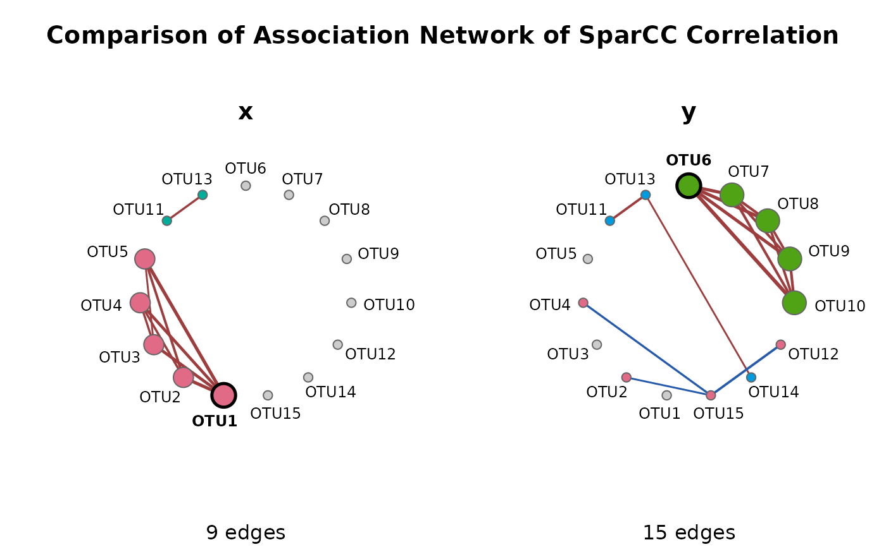

Compares two groups' association networks made by assoc_network():
the differences in each feature's centralities and in the networks'
global properties, how much their most central features and hubs
overlap (Jaccard index), and how similar their clusterings are (adjusted
Rand index), as NetCoMi's netCompare() does. Given the count table
and the groups, it also tests the differences by permuting the samples'
groups.
Arguments
- x, y
Two networks from
assoc_network()over the same features (matched by name):xof the first group,yof the second.- quantile
The "most central" features of a network are those above this quantile of a centrality (type 7, see
stats::quantile()), over all the features. Default0.75, as NetCoMi'sjaccQuant.- permutations
How many permutations for the tests: of the features' cluster labels, for the adjusted Rand index; and, with
countsandgroups, of the samples' groups. Default1000L.0Lfor no tests.- counts
The count table both networks were estimated from (all samples of both groups), or
NULL(the default) for no group-permutation tests. Any of the objects listed under Input Types; withmargin = 2(features as rows), givemargininassoc_args.- groups
Each sample's group, two different values (or the name of a column of
data).xwas made from the samples of the first group (the first level of a factor, else the first in sorted order),yfrom those of the second.- data
A data frame with the samples' metadata, when
groupsis a column name.- assoc_args
A list of the arguments that made the associations of
xandy(besidescounts), forfeature_assoc()with the networks' method: e.g.list(n_draws = 20)forsparcc(). The same arguments must be given again, as results don't record them.- network_args
A list of the arguments that made
xandywithassoc_network()(besidesx), e.g.list(threshold = 0.4).- p_adjust
How to adjust the centralities' permutation p-values for testing every feature: one of stats::p.adjust.methods. Default
'BH'.- seed
An integer seed for the random permutations, and for the seeds of each permutation's association runs. The same
seedgives the same results, for any number ofcpus.- cpus
How many threads to use, for the association runs and the networks' shortest paths. Results are the same for any number.
Value
A list of class ecodive_network_compare:
nodes: a data frame, one row per feature and centrality, withfeature,centrality("degree","betweenness","closeness"or"eigenvector"),x,y,difference(x - y), and, with the group-permutation test,p_valueandp_adjusted(over the features, for each centrality).global: a data frame, one row per global property ofassoc_network(), withproperty,x,y,differenceand, with the group-permutation test,p_value.jaccard: a data frame, one row per set ("degree","betweenness","closeness","eigenvector": the most central features;"hubs"), withjaccard(the Jaccard index of the two networks' sets), andp_lessandp_greater, the probabilities of a Jaccard index at most and at least as large by chance (see Details).ari: the adjusted Rand index of the two clusterings,value, and its permutationp_value.clusters: a data frame, one row per feature, withfeature,cluster_x,cluster_y,hub_xandhub_y: each network's clusters and hubs.edges_x,edges_y: the two networks'edges, whichplot()draws (plot.ecodive_network_compare()).
Attributes: method, quantile, permutations, groups (the two
group names, when given), and display (the title; see
ecodive_display).
Details
Most central features. Those above the quantile quantile of a
centrality over all the features (0 outside the largest connected
component), as for hubs in assoc_network().
Jaccard index. For two sets \(A\) and \(B\) of features, \(J
= |A \cap B| / |A \cup B|\) (0 when both are empty). p_less and
p_greater are \(P(J \le j)\) and \(P(J \ge j)\) under Real &
Vargas's (1996) model, as NetCoMi computes them: each of the \(n =
|A \cup B|\) features is in both sets with probability 1/3, so
\(|A \cap B|\) is Binomial(\(n\), 1/3). (This depends only on the
union, not on how many features there are.)
Adjusted Rand index (Hubert & Arabie 1985) of the two networks'
cluster columns as they are, so cluster 0 (features alone in their
cluster) is one cluster, as in NetCoMi. Its p-value tests the null
hypothesis ARI = 0: the cluster labels of y are permuted over the
features permutations times, and \(p = (1 + \#\{|ARI_b| \ge
|ARI|\}) / (B + 1)\). This is two-sided, as NetCoMi's p-values are
(its documentation describes a one-sided test; its outputs, compared
over 20,000 permutations, are two-sided); NetCoMi adds no 1 to the
counts.
Group-permutation tests (with counts and groups). Each
permutation shuffles the samples' groups, keeping the groups' sizes,
re-estimates both groups' associations with feature_assoc() (with
assoc_args) and rebuilds both networks with assoc_network() (with
network_args). A difference's p-value is the proportion of the
permutations, counting the observed one, with an absolute difference at
least as large. This runs the association method \(2B\) times: with
sparcc(), lower its n_draws in assoc_args, or permutations.
Permutation \(b\)'s association runs get their own seed, drawn from
(seed, \(b\)), replacing any seed in assoc_args.
Names in NetCoMi. quantile is jaccQuant, permutations is
nPermRand and nPerm (with permTest = TRUE), and p_adjust is
adjust. NetCoMi's results jaccDeg, jaccBetw, jaccClose,
jaccEigen, jaccHub and randInd are jaccard and ari here.
Differences from NetCoMi: p-values are adjusted with
stats::p.adjust() only (NetCoMi's default is "adaptBH"); the ARI test's
p-value counts the observed value; the permutations come from ecodive's
own generator, so they match NetCoMi's in distribution only; no graphlet
distance; no comparison of the LCCs alone.
Input Types
The counts parameter is designed to accept a simple numeric matrix, but
seamlessly supports objects from the following biological data packages:
phyloseqrbiomSummarizedExperimentTreeSummarizedExperiment
For large datasets, standard matrix operations may be slow. See
vignette('performance') for details on using optimized formats
(e.g. sparse matrices) and parallel processing.
References
Peschel, S., Müller, C. L., von Mutius, E., Boulesteix, A.-L., & Depner, M. (2021). NetCoMi: network construction and comparison for microbiome data in R. Briefings in Bioinformatics, 22, bbaa290.
Hubert, L., & Arabie, P. (1985). Comparing partitions. Journal of Classification, 2, 193–218.
Real, R., & Vargas, J. M. (1996). The probabilistic basis of Jaccard's index of similarity. Systematic Biology, 45, 380–385.
Examples
# Two groups of 60 samples of 15 taxa
set.seed(1)
make <- function (linked) {
basis <- matrix(rnorm(60 * 15), 60, 15)
basis[, linked] <- basis[, linked] + basis[, linked[1]]
matrix(rpois(900, exp(basis + 4)), 60, 15)
}
counts <- rbind(make(1:5), make(6:10))
colnames(counts) <- paste0('OTU', 1:15)
groups <- rep(c('a', 'b'), each = 60)
nx <- assoc_network(sparcc(counts[groups == 'a', ], n_draws = 10))
ny <- assoc_network(sparcc(counts[groups == 'b', ], n_draws = 10))
cmp <- assoc_network_compare(nx, ny)
cmp$jaccard
#> set jaccard p_less p_greater
#> 1 degree 0 0.66666667 1
#> 2 betweenness 0 0.66666667 1
#> 3 closeness 0 0.03901844 1
#> 4 eigenvector 0 0.03901844 1
#> 5 hubs 0 0.44444444 1
cmp$ari
#> value p_value
#> 0.350607806 0.002997003
plot(cmp)

# Group-permutation tests (slow: 2 x 19 SparCC runs)
cmp <- assoc_network_compare(
nx, ny, permutations = 19, counts = counts, groups = groups,
assoc_args = list(n_draws = 10) )
cmp$global
#> property x y difference p_value
#> 1 n_nodes 15.00000000 15.0000000 0.00000000 1.00
#> 2 n_edges 9.00000000 15.0000000 -6.00000000 0.20
#> 3 density 0.08571429 0.1428571 -0.05714286 0.20
#> 4 positive_fraction 1.00000000 0.8000000 0.20000000 0.05
#> 5 n_components 10.00000000 6.0000000 4.00000000 0.05
#> 6 lcc_size 5.00000000 5.0000000 0.00000000 1.00
#> 7 average_dissimilarity 0.95591462 0.9343942 0.02152045 0.20
#> 8 average_path_length 0.57362594 0.8008833 -0.22725738 0.75
#> 9 clustering_coefficient 0.68903944 0.7142857 -0.02524627 1.00
#> 10 modularity 0.19753086 0.4977778 -0.30024691 0.05